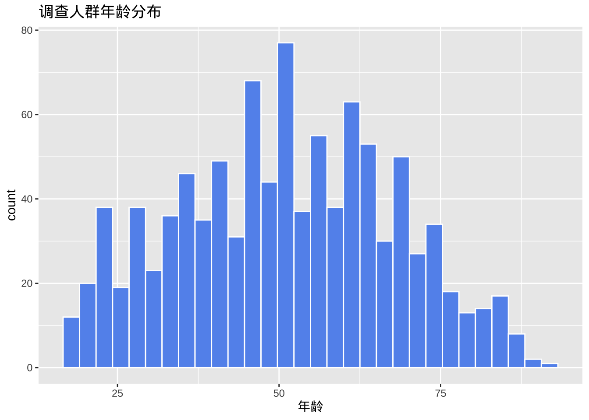

library(readr)
# 导入逗号分割的数据
#cgss2017 <- read_csv("cgss2017.csv")
# 导入制表符分割的数据
#cgss2017 <- read_tsv("cgss2017.txt")数据可视化
数据准备
可视化数据之前，需要准备数据，包括导入数据并进行清洗。
导入数据
R 几乎可以导入任何格式的数据，包括文本、Excel、SPSS和STATA等统计软件等。
文本文件
readr包提供了将分隔文本文件导入 R 数据框的函数选择。
Excel文件
readxl包可以从 Excel 文件导入数据，支持 xls 和 xlsx 格式。
library(readxl)
# 从excel工作表导入数据
#cgss2017 <- read_excel("cgss2017.xlsx", sheet=1)由于excel文件可以包含多个工作表，因此您可以使用sheet选项指定所需的工作表。默认值为sheet=1。
专业统计软件数据文件
haven包提供了从各种统计包导入数据的功能。示例采用的CGSS2015子数据集
library(haven)
# 导入stata数据
#cgss2017 <- read_dta("cgss2017.dta")
# 导入SPSS数据
cgss <- read_sav("cgss2015subset.sav")
# 导入SAS数据
#cgss2017 <- read_sas("cgss2017.sas7bdat")清理数据
数据清理是数据分析中最耗时的任务。以下列出了最重要的步骤。虽然方法有很多，但使用dplyr和tidyr包是最快捷、最容易学习的方法之一。
| 包 | 函数 | 用途 |
|---|---|---|
| dplyr | select | 选择变量/列 |
| dplyr | filter | 选择观察值/行 |
| dplyr | mutate | 转换或重新编码变量 |
| dplyr | summarize | 汇总数据 |
| dplyr | group_by | 识别需要进一步处理的子组 |
| tidyr | gather | 将宽格式数据集转换为长格式 |
| tidyr | spread | 将长格式数据集转换为宽格式 |
选择变量
该select函数从数据集选取指定的变量或列。
library(dplyr)
# 从数据框cgss中选择变量id，sex和age构成新数据集
newdata <- select(cgss, id, sex, age)
# 选择变量id以及hp1与hp4之间的所有变量
newdata <- select(cgss, id, hp1:hp4)
# 选择除了edu和lnincome以外的所有变量
newdata <- select(cgss, -edu, -lnincome)选择观测
该filter函数选择符合特定条件的观测（行）。可以使用&(AND) 和|(OR) 逻辑符号组合多个条件。
library(dplyr)
# 为了方便展示，将带有值标签的变量转换为因子(使用值标签作为取值)
cgss <- cgss %>% mutate(across(where(is.labelled), as_factor))
# 选择女性观测
newdata <- filter(cgss, sex == "女")
# 选择来自山东的女性
newdata <- filter(cgss, sex == "女" & province == "山东省")
# 选择来自东北三省的观测
newdata <- filter(cgss,
province == "辽宁省" |
province == "吉林省" |
province == "黑龙江省")
# 更简洁的代码
newdata <- filter(cgss,
province %in%
c("辽宁省", "吉林省", "黑龙江省"))变量创建与重新编码
mutate函数可以创建新变量或转换现有变量。
library(dplyr)
# 将身高从厘米转化成英寸，将体重从斤转化成磅
newdata <- mutate(cgss,
height = height * 0.394,
weight = (weight/2) * 2.205)
# 如果收入高于8万元，则变量incomecat取值为"高"，否则取值为"低"
newdata <- mutate(cgss,
incomecat = ifelse(income > 80000,
"高",
"低"))
# 将教育程度不是初中、普通高中、中专的转化为其他类别
newdata <- mutate(cgss,
edu = ifelse(edu %in%
c("初中", "普通高中", "中专"),
edu,
"其他"))
# 将身高大于200或小于75设定为缺失值
newdata <- mutate(cgss,
height = ifelse(height < 75 | height > 200,
NA,
height))汇总数据
summarize函数可用于描述性统计的数据汇总。可与by_group函数结合使用，用于按组计算统计值。na.rm=TRUE选项用于在计算平均值之前删除缺失值。
library(dplyr)
# 计算身高和体重的平均值
newdata <- summarize(cgss,
mean_ht = mean(height, na.rm=TRUE),
mean_weight = mean(weight, na.rm=TRUE))
newdata# A tibble: 1 × 2
mean_ht mean_weight
<dbl> <dbl>
1 164. 122.# 分性别组计算身高和体重的平均值
newdata <- group_by(cgss, sex)
newdata <- summarize(newdata,
mean_ht = mean(height, na.rm=TRUE),
mean_wt = mean(weight, na.rm=TRUE))
newdata# A tibble: 2 × 3
sex mean_ht mean_wt
<fct> <dbl> <dbl>
1 男 170. 133.
2 女 159. 113.使用管道
dplyr和tidyr软件包允许使用管道运算符以紧凑的格式编写代码%>%，运算符%>%将左边的结果传递给右边的函数的第一个参数。例如：
library(dplyr)
newdata <- filter(cgss,
sex == "女")
newdata <- group_by(newdata, province)
newdata <- summarize(newdata,
mean_ht = mean(height, na.rm = TRUE))
# 采用管道操作符更简洁，也更符合人类思维
newdata <- cgss %>%
filter(sex == "女") %>%
group_by(province) %>%
summarize(mean_ht = mean(height, na.rm = TRUE))日期数据的处理
在 R 中，日期值以字符的形式输入。例如，记录 3 个人出生日期的简单数据集。
df <- data.frame(
dob = c("11/10/1963", "Jan-23-91", "12:1:2001")
)
str(df) 'data.frame': 3 obs. of 1 variable:
$ dob: chr "11/10/1963" "Jan-23-91" "12:1:2001"将字符变量转换为日期变量的方法有很多。最简单的方法之一是使用lubridate包中提供的函数。这些函数包括ymd、dmy和 ，mdy分别用于导入年-月-日、日-月-年和月-日-年的格式。
library(lubridate)
# 将dob变量值从字符转化为日期型数据
df$dob <- mdy(df$dob)
str(df)'data.frame': 3 obs. of 1 variable:
$ dob: Date, format: "1963-11-10" "1991-01-23" ...这些值在R的内部记录为自 1970 年 1 月 1日以来的天数，可以方便地执行日期运算，提取日期元素（月、日、年），重新格式化（例如，1963年10月11日）。 日期变量对于制作时间相关图表非常重要。
重塑数据
有些图表要求数据为宽格式，而有些图表则要求数据为长格式，示例如下。
将宽数据集转换为长数据集
library(tidyr)
wide_data <- data.frame(id = c("01", "02", "03"),
name = c("张三", "李四", "王五"),
sex = c("男", "男", "女"),
height = c(70, 72, 62),
weight = c(180, 195, 130))
knitr::kable(wide_data, caption = "宽数据")| id | name | sex | height | weight |
|---|---|---|---|---|
| 01 | 张三 | 男 | 70 | 180 |
| 02 | 李四 | 男 | 72 | 195 |
| 03 | 王五 | 女 | 62 | 130 |
long_data <- pivot_longer(wide_data,
cols = c("height", "weight"),
names_to = "variable",
values_to ="value")将长数据转化为宽数据
library(tidyr)
knitr::kable(long_data, caption = "长数据")| id | name | sex | variable | value |
|---|---|---|---|---|
| 01 | 张三 | 男 | height | 70 |
| 01 | 张三 | 男 | weight | 180 |
| 02 | 李四 | 男 | height | 72 |
| 02 | 李四 | 男 | weight | 195 |
| 03 | 王五 | 女 | height | 62 |
| 03 | 王五 | 女 | weight | 130 |
wide_data <- pivot_wider(long_data,
names_from = "variable",
values_from = "value")缺失数据
真实数据很可能包含缺失值。处理缺失数据有三种基本方法：特征选择、列删除和插补。ggplot2包中的msleep数据集描述了哺乳动物的睡眠习惯，并且在多个变量上存在缺失值。
- 特征选择 在特征选择中，可以删除包含太多缺失值的变量（列）。
data(msleep, package="ggplot2")
# 每个变量中缺失值的比例
pctmiss <- colSums(is.na(msleep))/nrow(msleep)
round(pctmiss, 2) name genus vore order conservation sleep_total
0.00 0.00 0.08 0.00 0.35 0.00
sleep_rem sleep_cycle awake brainwt bodywt
0.27 0.61 0.00 0.33 0.00 61% 的 sleep_cycle 值缺失。可以决定将其删除。
- 按列删除
整行删除包含缺失值的观测。
newdata <- select(msleep, genus, vore, conservation)
newdata <- na.omit(newdata)- 补值
插补涉及用“合理”的猜测值（假设缺失值不存在时的值）来替换缺失值。有几种方法，详见VIM、mice、Amelia和missForest等包。这里将使用VIMkNN()包中的函数，用插补值替换缺失值。
# 用5个最近邻的值插补缺失值
library(VIM)
newdata <- kNN(msleep, k=5)基本上，对于每个有缺失值的案例，都会选择k个最相似的、没有缺失值的案例。如果缺失值为数值型，则使用这k 个案例的中位数作为插补值。如果缺失值为类别值，则使用这k 个案例中出现频率最高的值。该过程会迭代所有观测和变量，直到结果收敛（趋于稳定）。
重要提示：缺失值可能会对研究结果造成偏差（有时甚至非常严重）。如果有大量缺失数据，在删除观测或填补缺失值之前，要慎重考虑其合理性。
ggplot2 软件包简介
本部分简要概述了ggplot2包的工作原理，该软件包具有强大的绘图功能。
示例
ggplot2包中的函数可以分层分步构建图形，先从简单的图形开始，逐个添加其他元素，从而构建复杂的图形。
在使用 ggplot2 制图时，只需使用ggplot和geom两个函数。其他函数是可选的，可以按需求添加。
ggplot
ggplot函数指定要使用的数据框、变量到图形视觉属性的映射。这些映射位于aes函数内部。
library(ggplot2)
# 为了制图美观，剔除收入过高的人群
cgss <- cgss %>% filter(income <=200000)
# 确定数据集和映射
ggplot(data = cgss,
mapping = aes(x = eduyear, y = income))图表是空的,因为只是指定映射，教育年限变量映射到x轴，收入映射到y轴，但还没有指定图上要显示的内容。
几何对象
几何对象 (Geoms) 是可以放置在图上的几何形状（点、线、条形等），它们是以geom_开头的函数。先看看用geom_point函数添加点，创建散点图。
在 ggplot2 制图时，可以使用+号（容易忘记添加）将不同的函数链接在一起，一步一步构建复杂的图。
ggplot(data = cgss,
mapping = aes(x = eduyear, y = income)) +
geom_point()- 几何对象函数中可以指定参数（选项）控制其外观。下面的geom_point函数的选项包括color、size和alpha，分别控制点的颜色、大小和透明度。透明度的范围从 0（完全透明）到 1（完全不透明）。增加透明度有助于可视化重叠点密度。
ggplot(data = cgss,
mapping = aes(x = eduyear, y = income)) +
geom_point(color = "cornflowerblue",
alpha = .7,
size = 2)- 添加一条最佳拟合线，可以使用geom_smooth函数来实现。选项控制线的类型（线性、二次、非参数）、线的粗细、线的颜色以及是否包含置信区间。下面添加线性回归（method = lm）线（其中lm代表线性回归模型），默认带置信区间。
ggplot(data = cgss,
mapping = aes(x = eduyear, y = income)) +
geom_point(color = "cornflowerblue",
alpha = .5,
size = 2) +
geom_smooth(method = "lm")`geom_smooth()` using formula = 'y ~ x'分组
除了将变量映射到x轴和y轴（只能有两个变量维度）之外，还可以将变量映射到几何对象的颜色、形状、大小、透明度和其他视觉特征，体现多个变量维度，实现将观测更多的状态叠加到单个图形中。
# 采用颜色体现性别差异
ggplot(data = cgss,
mapping = aes(x = eduyear,
y = income,
color = sex)) +
geom_point(alpha = .5,
size = 2) +
geom_smooth(method = "lm",
se = FALSE,
linewidth = 1.5)`geom_smooth()` using formula = 'y ~ x'color = sex选项位于aes函数中，将变量sex映射到图形的视觉特征color上。
刻度
- 先解决中文支持的问题
library(showtext)
library(sysfonts)
# 加载黑体，最好找到字体的路径再加载 mac可用fc-list :lang=zh命令查看
font_add("Heiti SC", "/System/Library/Fonts/STHeiti Medium.ttc")
# 启用 showtext 自动渲染
showtext_auto()刻度控制变量通过以scale_开头的刻度函数来修改x轴和y轴的缩放比例和单位，以及图例所使用的颜色等刻度视觉特征。
ggplot(data = cgss,
mapping = aes(x = eduyear,
y = income,
color = sex)) +
geom_point(alpha = .5,
size = 2) +
geom_smooth(method = "lm",
se = FALSE,
linewidth = 1.5) +
scale_x_continuous(breaks = seq(0, 20, 5)) +
scale_y_continuous(breaks = seq(0, 200000, 50000),
label = scales::label_currency(prefix = "￥",suffix = "元")) +
scale_color_manual(values = c("indianred3",
"cornflowerblue"))`geom_smooth()` using formula = 'y ~ x'切片
切片会为给定变量（或成对的变量）的每个级别生成一个图表，方便对比。切片以facet_开头的函数创建。下面采用region变量的取值进行城乡切片。
ggplot(data = cgss,
mapping = aes(x = eduyear,
y = income,
color = sex)) +
geom_point(alpha = .5,
size = 2) +
geom_smooth(method = "lm",
se = FALSE,
linewidth = 1.5) +
scale_x_continuous(breaks = seq(0, 20, 5)) +
scale_y_continuous(breaks = seq(0, 200000, 50000),
label = scales::label_currency(prefix = "￥")) +
scale_color_manual(values = c("indianred3",
"cornflowerblue")) +
facet_wrap(~region)`geom_smooth()` using formula = 'y ~ x'标签
信息丰富的标签可以帮助图表的理解。labs功能为轴和图例提供自定义标签，还可以添加自定义标题、副标题和说明等。
ggplot(data = cgss,
mapping = aes(x = eduyear,
y = income,
color = sex)) +
geom_point(alpha = .5,
size = 2) +
geom_smooth(method = "lm",
se = FALSE,
linewidth = 1.5) +
scale_x_continuous(breaks = seq(0, 20, 5)) +
scale_y_continuous(breaks = seq(0, 200000, 50000),
label = scales::label_currency(prefix = "￥")) +
scale_color_manual(values = c("indianred3",
"cornflowerblue")) +
facet_wrap(~region) +
# 增加制图标题，坐标标签等
labs(title = "教育回报的影响因素",
subtitle = "CGSS2017",
caption = "来源：CGSS网站",
x = " 教育年限（年）",
y = "个人收入（元）",
color = "城乡差别") `geom_smooth()` using formula = 'y ~ x'主题
最后，可以使用以theme_开头的主题函数来微调图表的外观。主题函数控制图表的背景颜色、字体、网格线、图例位置以及其他与数据无关的功能。下面是简洁主题的运用。
ggplot(data = cgss,
mapping = aes(x = eduyear,
y = income,
color = sex)) +
geom_point(alpha = .5,
size = 2) +
geom_smooth(method = "lm",
se = FALSE,
linewidth = 1.5) +
scale_x_continuous(breaks = seq(0, 20, 5)) +
scale_y_continuous(breaks = seq(0, 200000, 50000),
label = scales::label_currency(prefix = "￥")) +
scale_color_manual(values = c("indianred3",
"cornflowerblue")) +
facet_wrap(~region) +
# 增加制图标题，坐标标签等
labs(title = "教育回报的影响因素",
subtitle = "CGSS2017",
caption = "来源：CGSS网站",
x = " 教育年限（年）",
y = "个人收入（元）",
color = "城乡差别") +
theme_minimal()`geom_smooth()` using formula = 'y ~ x'- 图表展现的结果：
- 教育年限与个人收入之间存在正向线性关系。但是男性的教育回报更高。
- 在较高教育水平上，城市男性的个人收入更高。
- 性别与城乡之间可能存在交互作用。城市似乎缩小了性别之间的教育回报的差异。
- 在较高教育水平上，两个性别的个人收入都存在一些非常高的异常值。
- 这些仅仅是初步发现，样本量有限，并且未采用统计检验来评估差异是否由偶然变异造成。
- 教育年限与个人收入之间存在正向线性关系。但是男性的教育回报更高。
放置data和mapping选项
使用 ggplot2 创建的绘图始终以ggplot函数开头。在上面的示例中，data和mapping选项位于此函数中。在这种情况下，它们适用于其geom_后的每个函数。但是，也可以将这些选项直接放在geom函数中。在此情况下，它们仅适用于该特定的几何对象。
# 颜色映射放在ggplot函数中
ggplot(cgss,
aes(x = eduyear,
y = income,
color = sex)) +
geom_point(alpha = .5,
size = 2) +
geom_smooth(method = "lm",
se = FALSE,
linewidth = 1.5)`geom_smooth()` using formula = 'y ~ x'颜色映射适用于点和趋势线。
# 颜色映射放在geom_point函数中
ggplot(cgss,
aes(x = eduyear,
y = income)) +
geom_point(aes(color = sex),
alpha = .5,
size = 2) +
geom_smooth(method = "lm",
se = FALSE,
linewidth = 1.5)`geom_smooth()` using formula = 'y ~ x'颜色映射只适用于点的分类，不适用趋势线，所以只有一条趋势线。
图作为对象
ggplot2 图表可以保存为 R 对象（如同数据框），进一步操作，然后绘制或存取。
# 创建散点图并保存为对象
myplot <- ggplot(data = cgss,
aes(x = eduyear, y = income)) +
geom_point()
# 绘制
myplot# 更改点的大小和颜色并绘制
myplot <- myplot + geom_point(size = 2, color = "blue")
myplot# 添加标题和趋势线后绘制，但不保存到对象
myplot + geom_smooth(method = "lm") +
labs(title = "示例图")`geom_smooth()` using formula = 'y ~ x'# 采用黑白主题绘制，不保存
myplot + theme_bw()单变量图
定类变量
单个定类变量分布通常用条形图来展示。
条形图
ggplot(cgss, aes(x = health)) +
geom_bar()- 可以添加选项来修改条形填充和边框的颜色、绘图标签和标题等。
ggplot(cgss, aes(x=health)) +
geom_bar(fill = "cornflowerblue",
color="black") +
labs(x = "健康状况",
y = "频次",
title = "调查人群健康状况")- 百分比条形图，代码aes(x=health)实际上是aes(x = health, y = after_stat(count))，其中count是一个特殊变量，表示每个类别中的频次。可以通过给y明确指定如何计算百分比。
ggplot(cgss,
aes(x = health, y = after_stat(count/sum(count)))) +
geom_bar() +
labs(x = "健康状况",
y = "频率",
title = "调查人群健康状况") +
# 采用刻度函数添加百分比符号
scale_y_continuous(labels = scales::percent)- 排序类别
某些情况下希望按频次对条形图进行排序，可以使用reorder函数按频次对类别进行排序。选项stat=“identity”告诉绘图函数不要计数，因为它们是直接提供的。
# 计算健康状态每个类别的频次
plotdata <- cgss %>%
count(health)
#使用新数据集来创建图表
ggplot(plotdata,
aes(x = reorder(health, n), y = n)) +
geom_bar(stat="identity") +
labs(x = "健康状况",
y = "频次",
title = "调查人群健康状况")图表条形按升序排列。使用reorder(health, -n)可按降序排列。
- 标签，带有数字标签的条形图
ggplot(plotdata,
aes(x = health, y = n)) +
geom_bar(stat="identity") +
# 添加数值标签
geom_text(aes(label = n), vjust=-0.5) +
labs(x = "健康状况",
y = "频次",
title = "调查人群健康状况")此处geom_text添加标签，并用vjust控制垂直对齐。
plotdata <- cgss %>%
count(health) %>%
mutate(pct = n / sum(n),
pctlabel = paste0(round(pct*100), "%"))
ggplot(plotdata,
aes(x = reorder(health, -pct), y = pct)) +
geom_bar(stat="identity", fill="indianred3", color="black") +
geom_text(aes(label = pctlabel), vjust=-0.25) +
scale_y_continuous(labels = scales::percent) +
labs(x = "健康状况",
y = "频率",
title = "调查人群健康状况")- 重叠标签的调整
如果类别过多或标签很长，类别标签可能会重叠，可以采用旋转坐标解决。
ggplot(cgss, aes(x = province)) +
geom_bar() +
labs(x = "省份",
y = "频次",
title = "调查人群分布") +
coord_flip()此外，可以ggpieggpie包中的函数创建饼图；结合ggplot2，使用treemapify包创建树状图，使用waffle包创建华夫饼图。
library(ggpie)
ggpie(cgss, group_key = "health", count_type = "full", label_info = "ratio")library(treemapify)
plotdata <- cgss %>%
count(edu)
ggplot(plotdata,
aes(fill = edu, area = n)) +
geom_treemap() +
labs(title = "调查人群教育程度")library(waffle)
ggplot(plotdata, aes(fill = edu, values=n)) +
geom_waffle(na.rm=TRUE)尺度变量
单个尺度变量的分布通常用直方图、核密度图或点图来绘制。
直方图
ggplot(cgss, aes(x = age)) +
geom_histogram() +
labs(title = "调查人群年龄分布",
x = "年龄")`stat_bin()` using `bins = 30`. Pick better value with `binwidth`.- 可以使用两个选项修改直方图颜色，fill为条形填充颜色，color为条形周围的边框颜色。
ggplot(cgss, aes(x = age)) +
geom_histogram(fill = "cornflowerblue",
color = "white") +
labs(title = "调查人群年龄分布",
x = "年龄")`stat_bin()` using `bins = 30`. Pick better value with `binwidth`.
- 分组和组距
直方图最重要的选项是分组（bins），它控制将尺度变量划分成的多个分组（即图中的条形数）。默认值为 30，但尝试较小或较大的数字有助于更好地了解分布的形状。还可以指定组距binwidth间接控制分组个数。
ggplot(cgss, aes(x = age)) +
geom_histogram(fill = "cornflowerblue",
color = "white",
bins = 20) +
labs(title = "调查人群年龄分布",
x = "年龄")与条形图一样，y轴可以表示计数或总数的百分比。
library(scales)
Attaching package: 'scales'The following object is masked from 'package:readr':
col_factorggplot(cgss,
aes(x = age, y= after_stat(count/sum(count)))) +
geom_histogram(fill = "cornflowerblue",
color = "white",
binwidth = 5) +
labs(title="调查人群年龄分布",
y = "比例",
x = "年龄") +
scale_y_continuous(labels = percent)核密度图
从技术上讲，核密度估计是一种非参数方法，用于估计连续随机变量的概率密度函数。绘制一个平滑的直方图，其中曲线下的面积等于1。
ggplot(cgss, aes(x = age)) +
geom_density() +
labs(title = "调查人群年龄分布")- 填充颜色
ggplot(cgss, aes(x = age)) +
geom_density(fill = "indianred3") +
labs(title = "调查人群年龄分布")
- 平滑参数
平滑度由带宽参数bw控制。值越大，平滑度越高，值越小，平滑度越低。
ggplot(cgss, aes(x = age)) +
geom_density(fill = "deepskyblue",
bw = 1) +
labs(title = "调查人群年龄分布",
subtitle = "bandwidth = 1")点状图
直方图的一种替代方案是点图。同样，尺度变量被分成多个组，但每个观测值都用一个点来表示，而不是用汇总条形图。默认情况下，点的宽度与分组的宽度相对应，并且点是堆叠的，每个点代表一个观测值。当观测值数量较少（例如少于 150 个）时，这种方法效果比较好。
ggplot(cgss, aes(x = age)) +
geom_dotplot(binwidth = 1) +
labs(title = "调查人群年龄分布",
y = "比例",
x = "年龄")fill和选项color可分别用于指定每个点的填充色和边框色。
ggplot(cgss, aes(x = age)) +
geom_dotplot(binwidth = 1,
fill = "gold",
color="black") +
labs(title = "调查人群年龄分布",
y = "比例",
x = "年龄")双变量图
两个类别变量
绘制两个类别变量之间的关系时，通常使用堆积条形图、分组条形图或分段条形图。
堆积条形图
library(ggplot2)
ggplot(cgss, aes(x =region , fill = health)) +
geom_bar(position = "stack")分类条形图
分类条形图将第二个类别变量的条形并排放置。
ggplot(cgss, aes(x = region, fill = health)) +
geom_bar(position = "dodge")
分段条形图
分段条形图是一种堆叠条形图，其中每个条形代表 100%。
ggplot(cgss, aes(x = region, fill = health)) +
geom_bar(position = "fill") +
labs(y = "比例")改善颜色和标签
- factor修改类别变量的地区变量顺序以及健康状态变量的顺序和标签
- scale_y_continuous修改 y 轴刻度标记标签
- labs提供标题并更改 x 轴和 y 轴的标签以及图例
- scale_fill_brewer更改填充颜色方案
- theme_minimal删除灰色背景并改变网格颜色
ggplot(cgss, aes(x = region, fill = health)) +
geom_bar(position = "fill") +
scale_y_continuous(breaks = seq(0, 1, .2),
label = scales::percent) +
scale_fill_brewer(palette = "Set2") +
labs(y = "比例",
fill="健康状态",
x = "地区",
title = "调查人群分地区健康状态") +
theme_minimal()
两个尺度变量
两个尺度变量之间的关系通常使用散点图和折线图来显示。
散点图
ggplot(cgss,
aes(x = age, y = income)) +
geom_point()- geom_point函数的选项
- color- 点颜色
- size- 点大小
- shape- 点的形状
- alpha- 点透明度。透明度范围从 0（透明）到 1（不透明）。
- color- 点颜色
- 函数scale_x_continuous和分别控制x轴和yscale_y_continuous轴上的缩放。
ggplot(cgss,
aes(x = age, y = income)) +
geom_point(color="cornflowerblue",
size = 2,
alpha=.8) +
scale_y_continuous(label = scales::label_currency(prefix="￥",suffix = "元"),
limits = c(0, 200000)) +
scale_x_continuous(breaks = seq(0, 90, 10),
limits=c(15, 90)) +
labs(x = "年龄",
y = "",
title = "年龄与收入的关系",
subtitle = "基于CGSS2015抽样数据")Warning: Removed 1 row containing missing values or values outside the scale range
(`geom_point()`).- 添加最佳拟合线，支持多种类型的拟合线，包括线性、多项式和非参数 (loess)。默认情况下，显示这些线的 95% 置信限度。
ggplot(cgss, aes(x = age, y = income)) +
geom_point(color= "steelblue") +
geom_smooth(method = "lm")`geom_smooth()` using formula = 'y ~ x'很奇怪的，收入会随着年龄的增加而降低。然而，在30-40岁间似乎出现了一个峰值，说明35岁之前可能是上升的。直线无法反映这种非线性效应，曲线更适合。通常使用二次（一次弯曲）或三次（两次弯曲）线。很少需要使用高阶（>3）多项式。
ggplot(cgss, aes(x = age, y = income)) +
geom_point(color= "steelblue") +
geom_smooth(method = "lm",
formula = y ~ poly(x, 2),
color = "indianred3")很可惜，二次曲线也没有证据反映这种变化，平滑的非参数拟合线也许可以更好地描述这种关系。默认的非参数拟合是Loess线，代表局部加权散点图平滑。
ggplot(cgss, aes(x = age, y = income)) +
geom_point(color= "steelblue") +
geom_smooth(color = "tomato")`geom_smooth()` using method = 'loess' and formula = 'y ~ x'类别与尺度变量
针对类别变量和尺度变量之间的关系，可以使用汇总统计数据的条形图、分组核密度图、并排箱线图、并排小提琴图、均值/标准差图、脊线图和克利夫兰图。
条形图（汇总统计数据）
可以使用条形图显示尺度变量在分类变量各个水平上的汇总统计数据（例如，均值或中位数）。
library(dplyr)
plotdata <- cgss %>%
group_by(health) %>%
summarize(mean_income = mean(income))
ggplot(plotdata, aes(x = health, y = mean_income)) +
geom_bar(stat = "identity")- factor函数可以修改每个健康状态的标签
- scale_y_continuous函数可以改进 y 轴的标签
- geom_text函数可以为每个条形图添加平均值
library(scales)
ggplot(plotdata,
aes(x = health, y = mean_income)) +
geom_bar(stat = "identity",
fill = "cornflowerblue") +
geom_text(aes(label = label_currency(accuracy = 1, prefix = "￥")(mean_income)),
vjust = -0.25) +
scale_y_continuous(breaks = seq(0, 40000, 5000),
label = label_currency(prefix = "￥")) +
labs(title = "各健康水平的平均收入",
subtitle = "",
x = "",
y = "")条形图的局限性是不显示数据的分布，仅显示每个组的汇总统计数据。分组核密度图在一定程度上纠正了这一缺陷。
分组核密度图
ggplot(cgss, aes(x = income, fill = health)) +
geom_density(alpha = 0.4) +
labs(title = "各健康水平的收入分布")箱线图
箱线图显示分布的第 25 个百分位数、中位数和第75 个百分位数。须线（垂直线）可捕捉正态分布的约 99%，超出此范围的观测值则绘制为表示异常值的点。
箱线图适用于比较数值变量的组（即分类变量的级别）。
ggplot(cgss, aes(x = health, y = income)) +
geom_boxplot() +
labs(title = "各健康水平的收入分布")- 缺口箱线图提供了一种近似方法来直观地显示组间是否存在差异。虽然这不是正式的检验方法，但如果两个箱线图的缺口不重叠，则有强有力的证据（置信度为 95%）表明两组的中位数存在差异。
ggplot(cgss, aes(x = health, y = income)) +
geom_boxplot(notch = TRUE,
fill = "cornflowerblue",
alpha = .7) +
labs(title = "各健康水平的收入分布")小提琴图
小提琴图与核密度图类似，但是镜像并旋转了 90度。
ggplot(cgss, aes(x = health, y = income)) +
geom_violin() +
labs(title = "各健康水平的收入分布")- 组合箱线图和小提琴图
ggplot(cgss, aes(x = health, y = income)) +
geom_violin(fill = "cornflowerblue") +
geom_boxplot(width = .15,
fill = "orange",
outlier.color = "orange",
outlier.size = 2) +
labs(title = "各健康水平的收入分布")有时候需要设置调试geom_boxplot的width参数，确保箱线图与小提琴图契合。
山脊线图
脊线图（也称为 joyplot）显示多个组中尺度变量的分布。它们类似于带有垂直刻面的核密度图，但占用的空间较小。脊线图使用ggridges包创建。
library(ggplot2)
library(ggridges)
ggplot(cgss,
aes(x = income, y = health, fill = health)) +
geom_density_ridges() +
theme_ridges() +
labs("各健康水平的收入分布") +
theme(legend.position = "none")Picking joint bandwidth of 6990平均值/SEM 图
- 一种常用的比较数值变量组数据的方法是绘制带误差线的均值图。误差线可以表示标准差、均值的标准误差或置信区间。
library(dplyr)
plotdata <- cgss %>%
group_by(health) %>%
summarize(n = n(),
mean = mean(income),
sd = sd(income),
se = sd / sqrt(n),
ci = qt(0.975, df = n - 1) * sd / sqrt(n))
ggplot(plotdata,
aes(x = health,
y = mean,
group = 1)) +
geom_point(size = 3) +
geom_line() +
geom_errorbar(aes(ymin = mean - se,
ymax = mean + se),
width = .1)- 比较不性别和健康水平的收入
plotdata <- cgss %>%
group_by(health, sex) %>%
summarize(n = n(),
mean = mean(income),
sd = sd(income),
se = sd/sqrt(n))`summarise()` has grouped output by 'health'. You can override using the
`.groups` argument.# 按性别绘制均值和标准误
ggplot(plotdata, aes(x = health,
y = mean,
group=sex,
color=sex)) +
geom_point(size = 3) +
geom_line(linewidth = 1) +
geom_errorbar(aes(ymin =mean - se,
ymax = mean+se),
width = .1)- 误差线有重叠，可以稍微避开水平位置来解决。
pd <- position_dodge(0.2)
ggplot(plotdata,
aes(x = health,
y = mean,
group=sex,
color=sex)) +
geom_point(position = pd,
size = 3) +
geom_line(position = pd,
linewidth = 1) +
geom_errorbar(aes(ymin = mean - se,
ymax = mean + se),
width = .1,
position= pd)- 美化图表达到出版质量
pd <- position_dodge(0.2)
ggplot(plotdata,
aes(x = health, y = mean, group=sex, color=sex)) +
geom_point(position=pd,
size=3) +
geom_line(position=pd,
linewidth = 1) +
geom_errorbar(aes(ymin = mean - se,
ymax = mean + se),
width = .1,
position=pd,
size=1) +
scale_y_continuous(label = scales::label_currency(prefix = "￥")) +
scale_color_brewer(palette="Set1") +
theme_minimal() +
labs(title = "按性别和健康状况划分的平均收入",
subtitle = "(均值 +/- 标准误)",
x = "",
y = "",
color = "性别")Warning: Using `size` aesthetic for lines was deprecated in ggplot2 3.4.0.
ℹ Please use `linewidth` instead.带状图
- 分组变量和数值变量之间的关系也可以用散点图来显示。
ggplot(cgss, aes(y = health, x = income)) +
geom_point() +
labs(title = "各健康水平的收入分布")- 点的重叠会使解释变得困难。可以适当将点错开一点距离，更容易看出关系。操作是在每个 y 坐标上添加一个小的随机数，代码是将geom_point替换为geom_jitter。
ggplot(cgss, aes(y = health, x = income)) +
geom_jitter() +
labs(title = "各健康水平的收入分布")- 使用颜色增加组间的对比
library(scales)
ggplot(cgss,
aes(y = health, x = income, color = health)) +
geom_jitter(alpha = 0.7) +
scale_x_continuous(label = label_currency(prefix = "￥")) +
labs(title = "各健康水平的收入分布",
subtitle = "CGSS2015数据",
x = "",
y = "") +
theme_minimal() +
theme(legend.position = "none")- 可以将箱线图叠加在带状图上
library(scales)
ggplot(cgss,
aes(x = health,
y = income, color = health)) +
geom_boxplot(size=1,
outlier.shape = 1,
outlier.color = "black",
outlier.size = 3) +
geom_jitter(alpha = 0.5,
width=.2) +
scale_y_continuous(label = label_currency(prefix = "￥")) +
labs(title = "各健康水平的收入分布",
subtitle = "CGSS2015数据",
x = "",
y = "") +
theme_minimal() +
theme(legend.position = "none") +
coord_flip()- ggpol包提供geom_boxjitter函数，可以创建一个混合箱线图（箱线图组合散点图）
library(ggpol)
library(scales)
ggplot(cgss,
aes(x = health,
y = income,
fill=health)) +
geom_boxjitter(color="black",
jitter.color = "darkgrey",
errorbar.draw = TRUE) +
scale_y_continuous(label = label_currency(prefix = "￥")) +
labs(title = "各健康水平的收入分布",
subtitle = "CGSS2015数据",
x = "",
y = "") +
theme_minimal() +
theme(legend.position = "none")Warning: Using the `size` aesthetic in this geom was deprecated in ggplot2 3.4.0.
ℹ Please use `linewidth` in the `default_aes` field and elsewhere instead.Warning: Using the `size` aesthetic with geom_segment was deprecated in ggplot2 3.4.0.
ℹ Please use the `linewidth` aesthetic instead.Warning: Using the `size` aesthetic with geom_crossbar was deprecated in ggplot2 3.4.0.
ℹ Please use the `linewidth` aesthetic instead.克利夫兰点图
- 如果比较数值变量的各个观测值，特别是比较大量数值汇总统计数据时，可以使用克利夫兰图
library(dplyr)
plotdata <- cgss %>%
group_by(province) %>%
summarize(mean_income = mean(income, na.rm=T))
ggplot(plotdata,
aes(x= mean_income, y = province)) +
geom_point()# 对数据进行排序会更直观
ggplot(plotdata, aes(x=mean_income,
y=reorder(province, mean_income))) +
geom_point()- 美化得到棒棒糖图
# Fancy Cleveland plot
ggplot(plotdata, aes(x=mean_income,
y=reorder(province, mean_income))) +
geom_point(color="blue", size = 2) +
geom_segment(aes(x = 40,
xend = mean_income,
y = reorder(province, mean_income),
yend = reorder(province, mean_income)),
color = "lightgrey") +
labs (x = "平均收入（元）",
y = "",
title = "分地区的平均收入",
subtitle = "CGSS2015数据") +
theme_minimal() +
theme(panel.grid.major = element_blank(),
panel.grid.minor = element_blank())